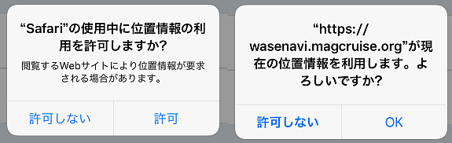
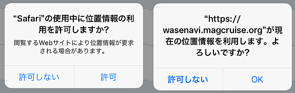

「現在位置が取得できません」
この表示のときナビゲーションが出来ません．ユーザ自身の力でチェックポイントを目指して下さい．
予想される原因
端末のGPSがONになっていますか？
- iOSの場合：端末のホーム画面で，[設定]＞[プライバシー]＞[位置情報サービス] をタップし，[位置情報]をオンにします．

- Androidの場合：端末のホーム画面で，[設定]＞ [ユーザー設定]をタップし，上部の [ON/OFFスイッチ] をタップします．

wasenavi.magcruise.orgに[位置情報の利用許可]を与えていますか？
- iOSでSafariをお使いの場合：
端末のホーム画面で，[設定]＞[プライバシー]＞[位置情報サービス]＞[Safariのサイト]をタップし，位置情報を[許可しない]から[このAppの使用中のみ許可]に変更して下さい．
位置情報利用のアラートが出たら[許可]または[OK]を押して下さい．
 
 - Google Chromeをお使いの場合：
アドレスバーの先頭の鍵のアイコンをクリックすると，[権限：現在地]が表示されます．ここで[このサイトでは常に許可]を選んで下さい．

屋外の空の開けた場所にいますか？
- 屋内にいるときGPSによる測位が出来ないことがあります．